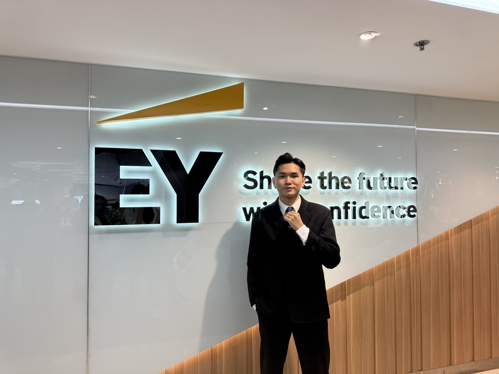

How can we design AI products that are not only powerful, but also safe and trustworthy enough for people to use with confidence?
People adopt what fits how they think, not what is merely good.
Users need to understand, control and trust their data.
Trust breaks when AI feels opaque and intrusive.
Organizations need evidence that systems deserve trust.
I want to build that trust into AI products.
Build, test with real people, and improve.

Learning how to learn.
Bachelor of Auditing, National Economics University (NEU), 2022–2026
- Mathematics for Economists (A)
- Statistics in Economics and Business
- Econometrics
- Accounting Information Systems
- Business Analysis
- EY Pathway to Leadership (Top 1% of 1,000+ applicants)
- NEU Academic Encouragement Scholarship ×2 (Top 5% of major, 4.0/4.0 GPA in awarded semesters)
- Petrolimex Scholarship
- First Prize, Provincial Mathematics Competition for Outstanding High School Students (Ha Tinh)
- Five-Merit Student (Hanoi City level & NEU)
- Outstanding Volunteer Student
Financially independent from my first year, I worked several jobs while studying. My early grades dropped; I rebuilt how I learn and earned Excellent results in every semester after that.


Users stay when recommendations feel useful and controllable; they leave when AI feels intrusive.
The influence of AI-based content recommendation algorithms on Generation Z's discontinuance intention toward short-video platforms (2025)
My team, like most young people, spent hours daily on short-video apps driven by AI. I persuaded the team to drop our original topic and ask what these algorithms do to users.
- Team founder and leader
- Built the conceptual model
- Principal data analyst
- Main liaison with supervisor Assoc. Prof. Dr. Pham Van Tuan (Vice Dean, NEU Business School)
Built a model of how AI recommendations shape Gen Z's decision to quit short-video apps, then tested it with a survey of Gen Z users.
Key contribution: Added privacy concern as a factor, inspired by my own discomfort with data collection; it became one of the study's original contributions.
- Asia-Pacific Economic Review, No. 378 (2025)
- ICSEED 2025 Proceedings (21st International Conference on Socio-Economic and Environmental Issues in Development)
- Second Prize, NEU Student Scientific Research Competition 2025 (AI Algorithm Application)
- Semifinalist, Eureka 2025


NEU Student Scientific Research Competition 2025 (Finance & Accounting)


A systematic review of the impact of compliance with IFRS on the risk of Vietnamese commercial banks
ICFAA 2024, pp. 629–640
Origin: At MB Bank, I saw banks preparing for IFRS adoption and proposed this study to give them practical guidance.
My role: Proposed the topic, led the literature review and synthesis, presented the paper at ICFAA 2024, redistributed work and kept the team on track when members left midway
Problem framing / Conceptual modelling / Survey design / Statistical analysis / Systematic review / Academic presentation

Why don't users adopt a better app?
Designing for trust at one of Vietnam's largest banks. Context: Online Debt Book, MB's app helping small shop owners manage customer debts.
In-depth interviews with shop owners who still used paper debt notebooks.
Pain points. Two root causes: fear that the app was too complicated, and fear that business figures could be exposed.
Improvement proposals to make the app simpler and easier to trust.
Test cases validating releases. 2 proposals shaped the debt report and export features shipped in Nov–Dec 2024.
Fewer steps, clearer numbers, nothing hidden, designed for shop owners who trusted paper.

Balance, due date and the latest transactions on one page, with one primary action: record a payment.

Outstanding, paid and overdue at a glance, one of the 2 proposals that shaped the shipped report and export features.

Every payment, debt and edit is logged with time, so owners can see exactly what changed and when.

Owners already did sums by hand; the order screen works like the calculator they know.
Built an n8n workflow that collected app reviews and support messages weekly and used an LLM to tag them by theme, turning a full day of manual reading into a ready-made weekly summary.
support msgs
weekly pull
tags themes
summary
Benchmarked 6 competitor apps and defined user requirements for MB BeeRich, a personal-finance platform inside the MBBank app (35M+ customers).

Efficiency alone does not create adoption. Users first need to understand a product, feel in control, and trust what happens to their data.
This information has been authorized for use by the organization.
How do organizations know a system deserves their trust?
34 of 42 recommendations adopted by management.
Per access review, with a reusable SQL-based tool.
Access and change records reviewed in full / 30 access risks uncovered.


Noticed that standard IT audits check only a sample of records. Built a reusable SQL-based tool that reviews 180,000+ access and change records in full, cutting each review from 2 days to 3 hours and uncovering 30 access risks.
Scope. Reviewed the security and reliability of core accounting systems for 12 clients, including leading Vietnamese listed companies and Fortune Global 500 subsidiaries.
User & process research. 40+ stakeholder interviews and process walkthroughs across 8 clients, uncovering manual workarounds outside the ERP, approval and access redesigns adopted by 6 clients.
Visualization. Designed a Power BI dashboard for managers to track all 42 findings by client, risk level and status, replacing manual weekly reporting.
Recognition. Selected for the EY Pathway to Leadership Scholarship (Top 1% of 1,000+ applicants), this work became my A+ graduation thesis.
Trust in technology must be verified, not assumed. I want to design systems where that trust is built in from the start, not checked afterwards.
This information has been authorized for use by the organization. No client names or audit documents are shown.


Recycled clothing nobody wanted to buy, until we stopped selling “recycled.”
Problem. Fashion waste, and recycled clothing that people don't want to buy.


Early collections sold slowly. Interviews showed customers connected with the story behind each piece, not the label “recycled.”
Rebuilt the campaign around stories, “TÍNH”: gender without limits, personality first, told through lookbooks and a street-photo series.
Upcycled collections launched, social-media views reached.


Production scraps became tote bags, handmade from the collection's leftover fabric.
A solution succeeds when it responds to how people actually think and behave, my first experience of user-centered design.
Led an 80-member team of writers, designers and videographers.
Relaunched Take One, Northern Vietnam's first student advertising video competition, with a new format reaching 50,000+ people.
Secured 6 partners from 20+ brands and agencies pitched, providing funding, production support and professional mentors.
What I bring, and what I will build at IID.
| CAPABILITY | WHAT I ALREADY HAVE | WHAT I WILL BUILD AT IID |
|---|---|---|
| User research & design thinking | 16 shop-owner interviews, 40+ stakeholder interviews, ALLY redesign | Formal product design methods, prototyping, usability testing |
| Data & analytics | SQL tool on 180,000+ records, Power BI, econometrics | Machine learning practice, engineering mathematics |
| AI & automation | n8n + LLM workflow | Designing, prototyping and evaluating AI systems |
| Trust, risk & governance | Technology audit of 12 clients, privacy research | Building trustworthy AI by design |
| Research | 3 publications, 2 research prizes, Eureka semifinalist, 1 paper under Q2 review | Testing designs with real users, not only surveys |
| Leadership & teamwork | 80-member team, 10-member startup | Interdisciplinary Capstone teams with engineers and designers |
I am not seeking to become a pure AI engineer. I want to understand AI well enough to design, prototype, evaluate and manage AI products that solve real problems.

The bridge I need, in the place it is being built.
Interdisciplinary by design. IID welcomes students from economics, management and finance, and combines AI, product design and management, the exact bridge I need between my business background and AI.
Project-based learning. Capstone Projects I–II and the AI + Innovation Design Thematic Workshop match how I have always worked: build, test with real people, improve.
Courses that fill my gaps. Practice and Application of Machine Learning / Mathematics for Engineering Master Candidates / Information and Communication Technology / Product Design and Development / Design for Social Innovation.
Full-cycle AI product and management training for entrepreneurship, my long-term goal.
Ecosystem. Shenzhen is home to leading digital banks and fintech firms building AI for small businesses, the users I want to serve.
Institutional bridge. The recent commitment between NEU and Tsinghua SIGS to cooperate on faculty and postgraduate exchange.
Close the gaps. Then build.
- Technical depth: Machine Learning, ICT, Engineering Mathematics.
- Design skills: Product Design and Development, Design for Social Innovation.
- Practice: team projects, hackathons and innovation competitions with engineering and design students.
- AI + Innovation Design Thematic Workshop and Capstone Projects I–II → develop TrustLedger.
- 6-month internship as a product manager in AI-driven SME lending (target: WeBank, Shenzhen).
TrustLedger
an AI-native "credit passport" for small businessesMany SMEs in China and Southeast Asia cannot get bank loans because they lack collateral and paperwork.
Interviewing shop owners for MB Bank's Online Debt Book.
Collects payment history from e-wallets, bank transfers and online sales; AI turns it into a clear, explainable financial record owners can share with banks.
Owner controls what is shared, explainable scoring, audit-ready data trail (from my EY experience).
VALIDATION PLAN / Interviews with SME owners and loan officers in Shenzhen and Vietnam → prototype → testing with real users → venture-ready by graduation.
- Work in China as an AI product designer at a bank or fintech company.
- Build credit-assessment and cash-flow tools that are powerful, fair, transparent and easy to use.
- Found a venture bringing trustworthy AI financial tools to SMEs and small shop owners, growing from TrustLedger.
- Bring these skills back to Vietnam and other emerging markets.
- Remain a bridge between Tsinghua and NEU, supporting future exchanges.
WHAT I CONTRIBUTE TO IIDEmerging-market and SME perspectives, experience across entrepreneurship, user research, banking innovation and technology audit.